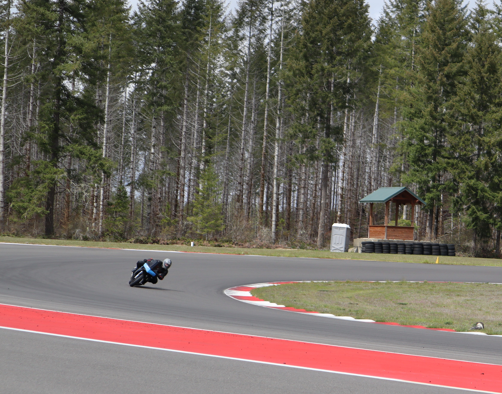
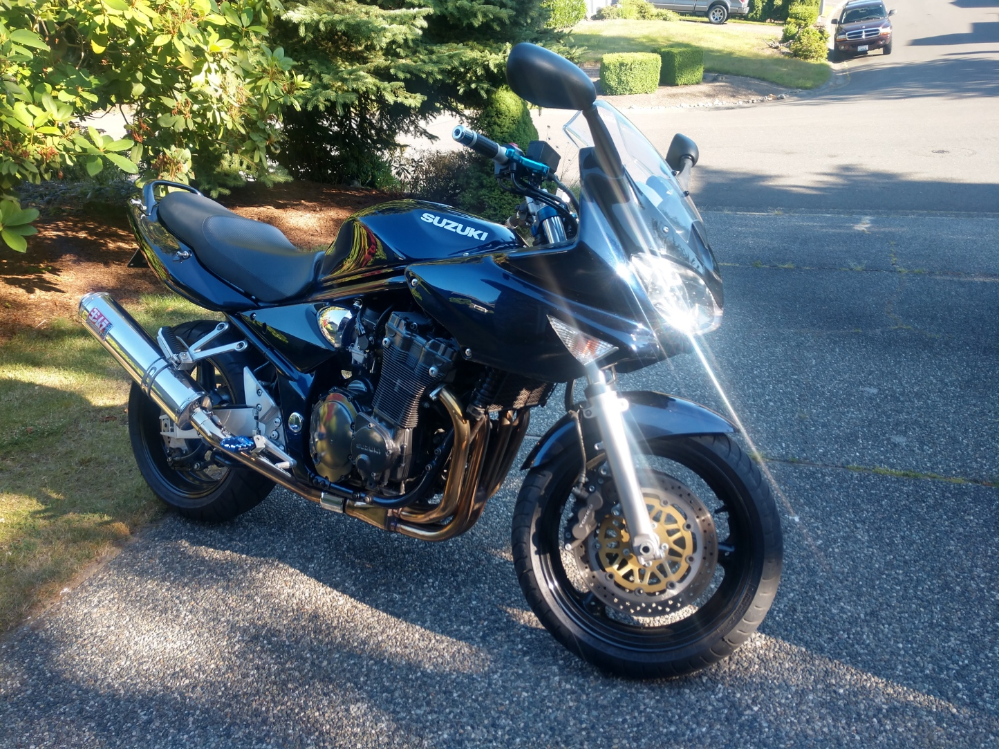
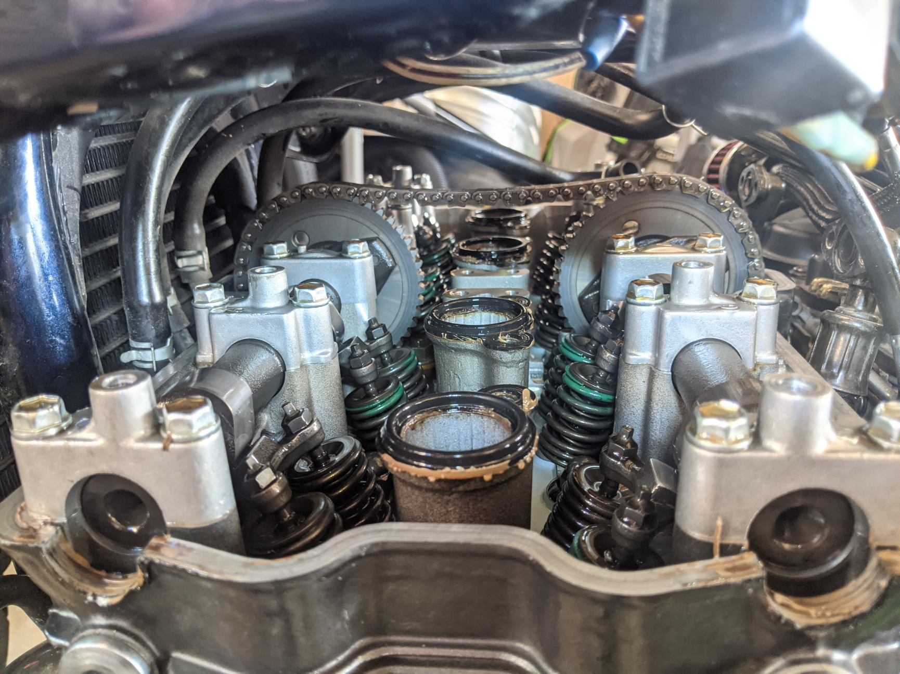
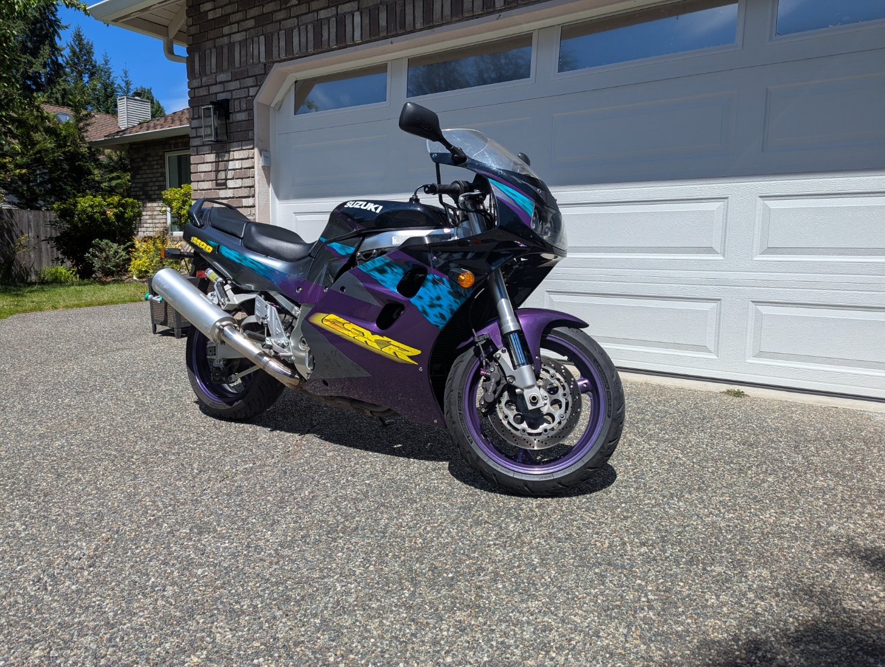
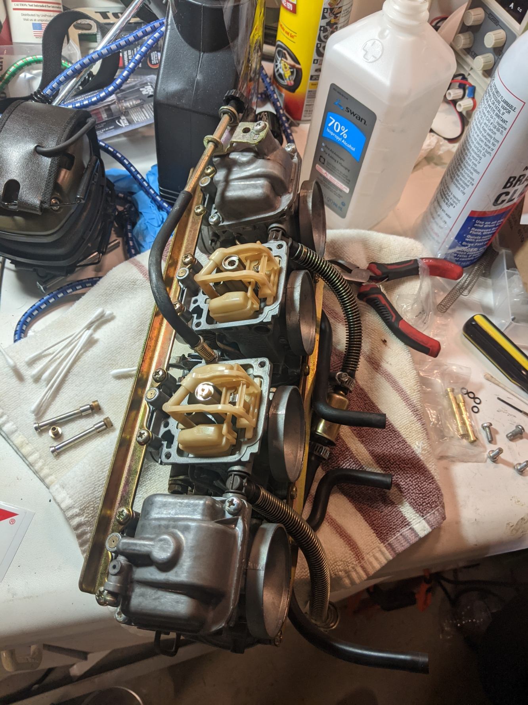
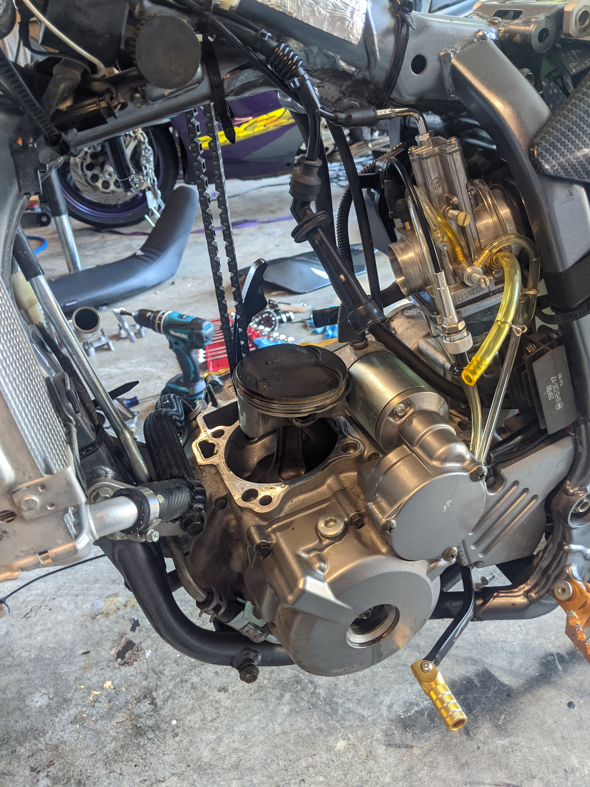
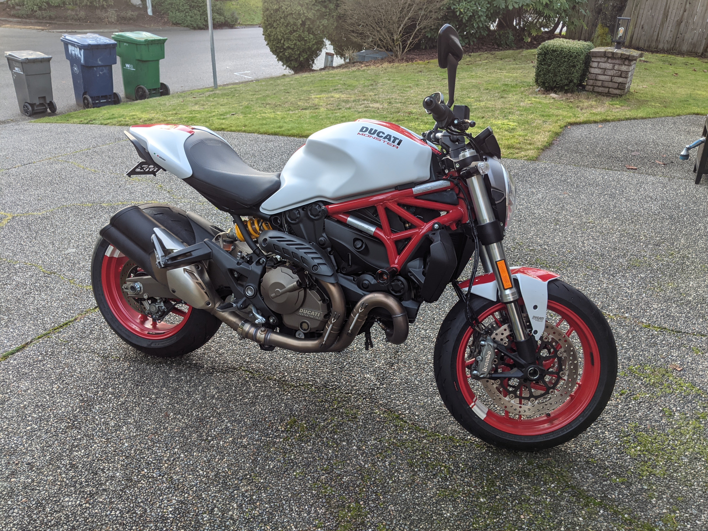
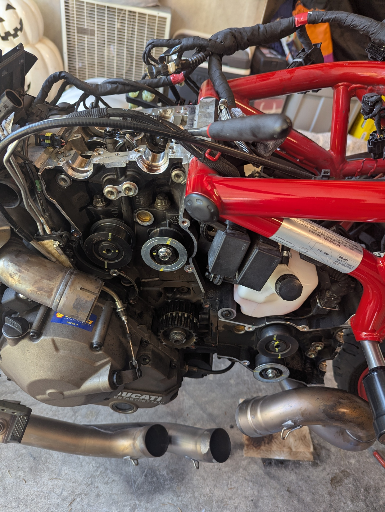
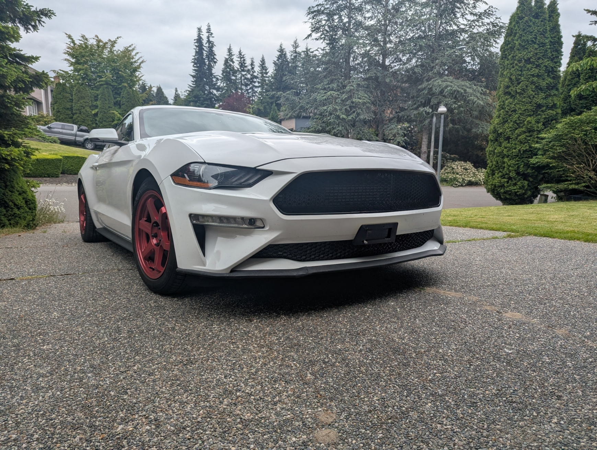
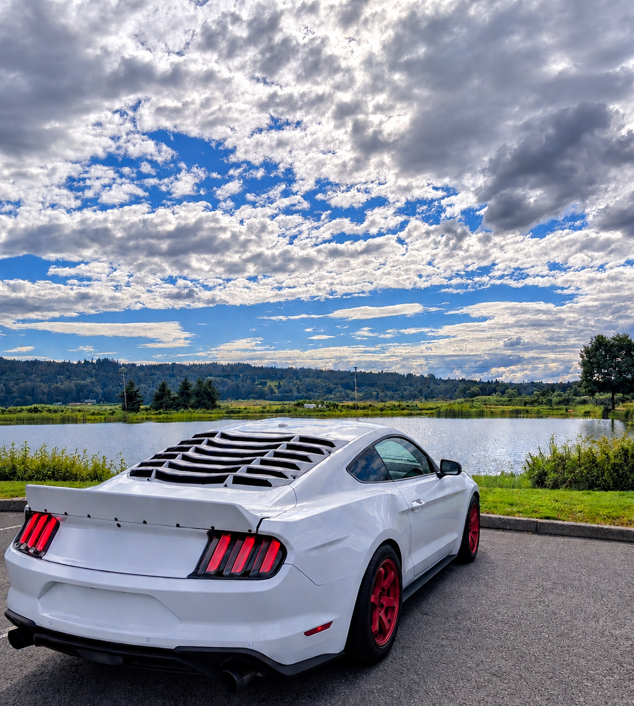

It began with a 50cc scooter during the summer of COVID to commute to work for cheap while circumventing the need for a motorcycle endorsement, and evolved into a passion for modifying and riding motorcycles. Recently I've dipped my toes into car mods with a Mustang Ecoboost. Prior to 2020 I never understood why people liked cars/bikes so much, a car was just a tool to get me from A to B, but now I understand, these machines are so much more. They are a form of art, the engineering is both simple and complex, riding them is an experience unlike anything else out there, and working on them is as therapeutic as riding them. Lastly, I've met a lot of great people through this hobby. Here's a list of the motorcycles and cars I've owned and modified over the years, oldest to newest.
Kymco Super 8 (50cc Scooter)
My first motorcycle, and the bike that got me into wrenching in the first place. It's a 50cc scooter that was restricted to about 25 mph. If I was going to commute to work with this thing, it needed to go at least 35 mph! Here's what I did to open it up:
- Unrestricted CDI
- 100cc big bore kit
- Larger carburetor from the 150cc GY6 engine
- Polini variator
- Amazon exhaust
Got it up to 45 mph on the flat, but it still wasn't fast enough. I think I'm going to need my motorcycle endorsement after all.

Kymco Spade 150cc
A step up from the Super 8, this was a 150cc mini-bike and what I took the motorcycle safety course with. It didn't have much aftermarket support, so I didn't do much to it beyond some cosmetic upgrades. Topped out at about 55 mph. Mostly rode it around side streets and used it to get comfortable on the road.

BMW G310GS
My third bike, and my first real capable one. Did a bunch of offroading on it: forest roads, a couple sections of the WA BDR, single track out at Reiter and Walker ORV, and quite a bit of riding around town too. Again, not much aftermarket support, so I didn't do much to it beyond some cosmetic upgrades.

Yamaha R3
I had 50/50 tires on my GS and didn't want to wear them out with a bunch of street riding, so I picked up an R3. The R3 was one of the most modifiable bikes I ever had, and I did loads of work on it. Here's the list:
- Akrapovic carbon fiber full exhaust
- Ohlins front and rear suspension
- TST worx package (Velocity stacks, AIS block offs, air box mods, K&N filter + Dyno Tune from 2 Wheel Dyno), put out 42HP peak
- Brembo front caliper
- CRG levers
- R6 throttle tube
- Vortex clip-ons
- Spiegler steel brake lines
- TST integrated tail light and flush mount turn signals
- TST carbon fiber front fender
- Driven sprocket and chain kit
- Arashi Rear Sets
- Driven Halo gas cap


SV650s
The guy who sold me the R3 Ohlins suspension parts also had a completely destroyed SV650s that he sold me for cheap, first photo is how he dropped it off at my house, the second photo is when I sold it. Again, tons of mods and maintenance work:
- Loads of electrical work to get it to start and get the lights to work.
- Replaced fuel lines.
- All new fluids and filters
- Brembo front master cyclinder
- Brake pads and steel braided lines
- Valve check, plugs, compression test, and replacement cam shaft retainers.
- Delkevic exhaust
- Vortex quick accel sprocket and chain kit
- Brand new fairing set, lower fairings with custom brackets.
This was also the first bike I took out for a couple track days.



Suzuki GSXR 600
This bike was already really awesome and a lot of fun, so I didn't do much to it: a quick accel sprocket kit, an exhaust servo delete, and an O2 sensor delete. Took it out for a few track days at the Ridge and Pacific. Got it ove 150mph on the speedo.


Suzuki Bandit 1200S
Rejetted the carburetor with a Dyno Jet Stage 1 kit, but mostly left this bike as is, it was already perfect.


1996 Suzuki GSXR 1100
Did a lot to fix this one up: rebuilt front forks, K&N air filter, Dyno Jet Stage 1 kit and carb cleaning, valve check, and a new chain and sprockets.


2006 Suzuki DRZ400S
Bought nearly 20 years old with only 800 miles, tons of mods, had it swappable from dirt to street (supermoto). One of the most fun bikes I ever had.
- 434CC Big Bore Kit
- Lectron Carburetor
- Full Yoshimura Exhaust
- Larger gas tank
- Hotcams stage 2 intake and exhaust cams
- Steel braided brake lines
- Aftermarket rotors
- Lots of gold bling


2015 Ducati Monster 821
Probably the most fun bike I've ever owned.
- Exhaust servo delete
- O2 sensor delete
- Hotbodies slip-on exhaust
- Gecko Racing rear sets
- New chain and sprockets
- Did the valves myself and changed the timing belts
- K&N air filter
- Mintake high flow air intake holder


2020 Mustang Ecoboost
I bought the Mustang primarily because it was so inexpensive for the amount of stock horsepower and because it's one of the most customizable and modifiable platforms out there. It was also my first time seriously working on a car and didn't want to mess up a GT. Here are all the things I've done to it so far:
- K&N cold air intake
- Turbosmart dual-port blow off valve
- Turbosmart 7 PSI wastegate
- CVF race intercooler and CVF charge pipe kit (hot and cold side)
- R1 concepts brake kit, rotors and pads
- CVF 3" downpipe
- SPEC-D 3" cat back exhaust
- PPE aluminum transmission pan
- Ruthenium spark plugs
- Eibach 1" pro lowering springs
- Mishimoto catch can
- 93 octane tune from EMS
- 1" wheel spacers
- Body work and aesthetic modifications
- Paint matched rear window louvers, duck tail spoiler, and decklid
- 18x8.5, 9six9 TE37 candy apple red wheels
- Front chin splitter
- Front upper and lower grilles
- General maintenance, regular oil changes, transmission fluid/filter change, rear diff oil replacement.
First photo below is the Mustang stock, the next two are after all the mods.


